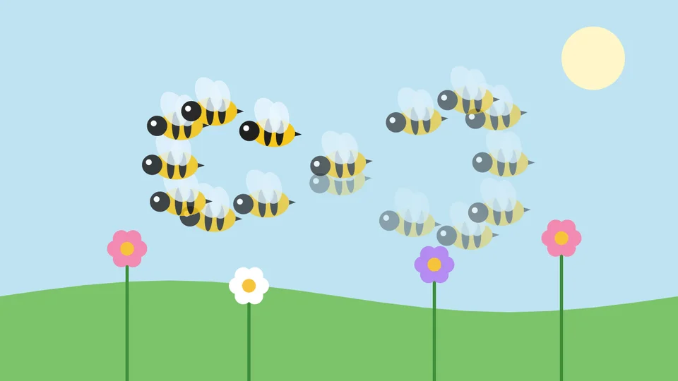

Tutorials
Motion Sketch
Fly a bee round a meadow by moving the pointer while the movie plays, then make it buzz with a wiggle on top.
This page is also a lesson inside Phoenix: choose and start Motion Sketch, and Phoenix points at each control as you go. It takes about 6 minutes.
To follow along here instead, download the starting document, motion-sketch.fla, and open it with .

Motion Sketch moves an instance the way your hand moves: press on the stage and move the pointer, and the movie plays while the instance follows you. No keyframes to set, no path to draw.
The bee is a graphic symbol with flapping wings, on the Bee layer above a meadow.
1. Select the bee
Press V for the Selection tool and click the bee. Leave the playhead on frame 1: the sketch starts from there.
2. Choose Motion Sketch
Choose Control > Motion Sketch. Nothing moves yet: Phoenix waits for you to press on the stage.
3. Fly it
Press on the bee and, holding the button down, move the pointer in loops round the flowers. The movie plays as you go, and the bee follows where you point.
Let go when you are done. The recording also stops by itself when the movie comes round to the start again, after four seconds.
4. Play it
Press Enter, or click the play button in the timeline header. The bee flies your path, wobbles and all, at the speed you drew it. Press Enter again to stop.
5. Where the path is kept
With the bee selected, look at the Behaviors panel. The path is a Recorded Motion behavior, with a key a frame for how far the bee has moved Across and Down from where you pressed.
Change a key to nudge the path, or choose Motion Sketch again to record a new one in its place.
6. Add a buzz
Click Add Behavior and choose Wiggle. Behaviors add up: the bee follows your path and shakes about on top of it.
7. Make it quick
A bee buzzes fast and small. Set Wiggles per second to 8, Move (pixels) to 4 and Turn (degrees) to 10.
8. Play it again
Press Enter. The bee loops round the meadow along your path, buzzing as it goes. Press Enter again to stop.
What you did
You recorded a path by hand with Motion Sketch, found it as keys on a Recorded Motion behavior, and added a wiggle on top.
To end where you began, so the movie loops smoothly, finish your sketch near the place you pressed. Bake in the Behaviors panel turns the path into ordinary keyframes.
For everything this tutorial touches on, see Motion Sketch.